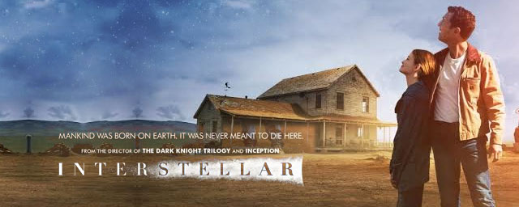
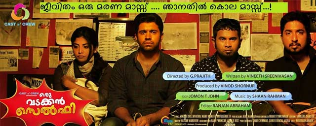
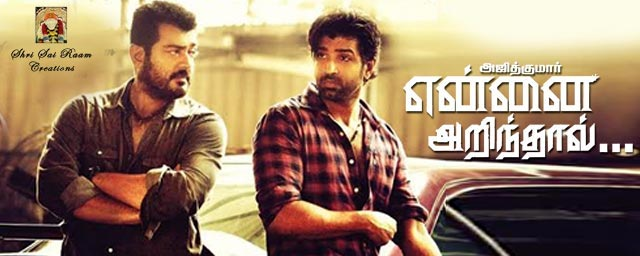
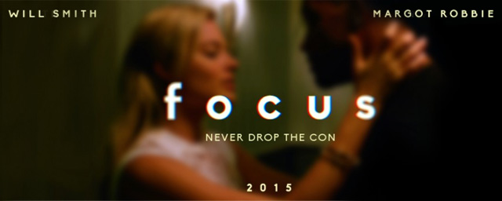
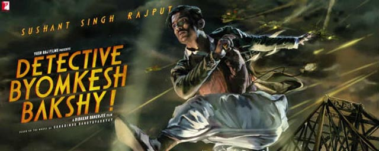
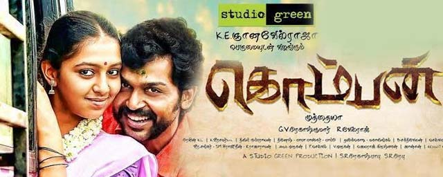
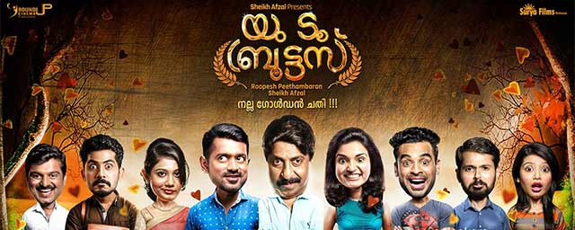
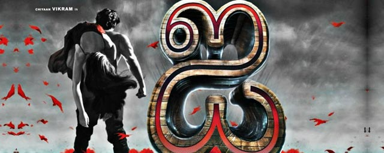

With our time on Earth coming to an end, a team of explorers undertakes the most important mission in human history: traveling beyond this galaxy to discover whether mankind has a future among the stars

Interstellar54%
From the heart of North Malabar comes a fun filled self portrayal of today's generation! The lead character has a dream to make a film and plans to meet Tamil movie director Gautham Menon and then later superstar Ajith to fulfil his dream.
His best friend suggests they make a short film and they together decide the story of the movie to be a copy of Korean movie. Soon they head to Chennai. The story narrates their journey to Chennai and their obsession in taking selfies on the way.

Oru Vadakkan Selfie65%
Mohanlal plays Vineeth Pillai, a bored scribe who has been working for a family magazine for the past twenty years. Kalyani, the new editor-in-chief, decides to revamp the whole system and get rid of the old staff. In order to make life difficult for Vineeth and get him to quit, he is assigned with the tough task of interviewing Deepa, an advocate-cum-activist. She evades all his attempts and the film chronicles how he goes about accomplishing the challenge.

Ennum Eppozhum45%
A couple's road trip goes awry but the woman, stacked against all odds, manages to not just stick it out but indeed give it back.Meera and Arjun are professionals living in Gurgaon. When Meera walks out of a party late one night, she gets attacked by a group of unknown men. Although she escapes through the skin of her teeth, it leaves her traumatised. Arjun, partly blaming himself for not being there that night, tries to make up for it by treating her to a luxurious desert holiday. As they stop on a Highway dhaba for dinner, they witness a young girl being picked up by a bunch of hoodlums. Arjun chooses to step in, unmindful of the danger ahead.

NH10 14%
Dum Laga Ke Haisha revolves around the life of a small town couple - Prem and Sandhya. From overcoming his fear of the English language to dealing with an overbearing father, Prem (Ayushmann Khurrana) discovers that his oversized and mismatched wife, Sandhya (Bhumi Pednekar), who he thought was a spanner in his business and life, will actually lead him to something quite cool.

Dum Laga Ke Haisha70%
Every child comes into the world full of promise, and none more so than Chappie: he is gifted, special, a prodigy. Like any child, Chappie will come under the influence of his surroundings - some good, some bad - and he will rely on his heart and soul to find his way in the world and become his own man. But there's one thing that makes Chappie different from anyone else: he is a robot. The first robot with the ability to think and feel for himself. His life, his story, will change the way the world looks at robots and humans forever

Chappie80%
Badlapur is a dark crime drama with an interesting game of taking action and responsibility, of being able to and not being able to forgive and make sacrifices.
The film delivers a top-notch thriller, which shows how a happy man's life changes into an unstable emotional state, and the twist becomes a part of the formula.

Badlapur 35%
Yennai Arindhaal captures the various stages in the life of police officer Sathyadev. A dedicated Sathya puts his work before anything else and continues to risk his life to fight anti-social behaviour thereby making his city a safer place to live in.
But above all, Sathya takes upon himself to find the culprit who murdered his fiancee. His journey takes him around the world where a series of action sequences and high adrenaline situations arises culminating into a surprising climax.

Yennai Arindhaal10%
The story is about a freelance writer for a daily based in Bangalore, who lives with his close friend. On a rainy night, he meets a girl who is enjoying her life after studies. Gradually their friendship turns into love and the events that follow form the rest of the story.

100 Days Of Love 28%

Preview 1
Will Smith stars as Nicky, a seasoned master of misdirection who becomes romantically involved with novice con artist Jess (Margot Robbie). As he's teaching her the tricks of the trade, she gets too close for comfort and he abruptly breaks it off. Three years later, the former flame - now an accomplished femme fatale - shows up in Buenos Aires in the middle of the high stakes race-car circuit. In the midst of Nicky's latest, very dangerous scheme, she throws his plans for a loop, and the consummate con man off his game.

Focus34%
In a contemporary interpretation of war-torn Calcutta during the 1940s, the film follows the first adventure of Byomkesh, fresh out of college, as he pits himself against an evil genius who is out to destroy the world. It is his wits against the most villainous arch criminal the world has seen, in a world of murder, international political intrigue and seduction.

Detective Byomkesh Bakshy82%
Komban, a story set in Ramanathapuram district, is about Kombaiah Pandian, a butcher played by Karthi, and his relationship with his father-in-law, played by Rajkiran.

Komban36%
Hunterrr is a coming of age story of a man who is obsessed with sex, and all his life has been chasing skirts. Until he falls in love. Hunterrr stars Gulshan Devaiah in the lead role.

Hunterr 63%
After defeating Owen Shaw and his crew, Dominic Toretto (Vin Diesel) and his crew are able to return to the United States and live the normal life again as they had wanted, but Owen's older brother, Ian Shaw (Jason Statham), is after Dominic, seeking revenge for the death of his brother, putting the entire crew in danger once more. After learning of Han's death, the crew sets out to find the man who killed one of their own, before he finds them first.

Fast and Furious 760%
The film is an inspirational love story about a Delhi university student and aspiring writer afflicted with cerebral palsy, who leaves India for New York University, where she falls for a fiery young activist.

Margarita with a straw50%
Naan Thaan Siva is an upcoming Tamil thriller film directed by R. Panneerselvam and produced by Thirupathi Brothers. The film features newcomer Vinod and Ashrita Shetty in the leading roles, while Prashant Narayanan portrays the antagonist

Naan Thaan Siva 45%
Uttama Villain, roughly translated to 'a virtuous villain' is about a struggling actor past his prime, getting ready for one last act that will establish him as the biggest performer of all time. The story covers a time span of approximately 1500 years as it keeps moving to and fro in different time zones.
Uttama Villain10%
The Fantastic Four, a contemporary re-imagining of Marvel's original and longest-running superhero team, centers on four young outsiders who teleport to an alternate and dangerous universe, which alters their physical form in shocking ways. Their lives irrevocably upended, the team must learn to harness their daunting new abilities and work together to save Earth from a former friend turned enemy.

The fantastic four 28%
Preview 2
OK Kanmani is a campus love story laced with comedy and marks Mani Ratnam's return to the romance genre after a decade. Nithya plays an architect and renowned Indian architect BV Doshi plays her professor in the film.

O Kadhal Kanmani75%
An ordinary man goes against all odds and forges his destiny to become a 'Big Shot'. It is the story of how one man's Dream becomes every man's Nightmare...
Bombay Velvet80%
Watch the cool, suave and attractive Romeo romancing the cute, adorable and naughty Juliet in his own alluring way. Presenting Romeo Juliet teaser starring Jayam Ravi and Hansika Motwani directed by Lakshman.

Romeo Juliet24%
Ethan and team take on their most impossible mission yet, eradicating the Syndicate - an International rogue organization as highly skilled as they are, committed to destroying the IMF.

Mission Impossible: Rogue Nation 78%
Life of Josutty narrates the story of Josutty (Dileep), a simple farmer living in a village on the high ranges. Josutty has a father, mother and two sisters. It is about Josutty's life from the age 8 to 38.

Life Of Joseutty 50%
Based on the real-life scandal that shocked Victorian-era England, the film tells the story of Euphemia ''Effie'' Gray. At 19, she married the prominent art historian and critic John Ruskin, but Ruskin refused to consummate their marriage. Lonely and frustrated Effie is drawn to pre-Raphaelite painter John Everett Millais, and finds a friend and champion in Lady Elizabeth Eastlake. After five years trapped in a loveless marriage, Effie will defy the rules of Victorian society.

Effie Gray 40%
M.S. Dhoni: The Untold Story is a film based on the life of Indian cricketer Mahendra Singh Dhoni. The film stars Sushant Singh Rajput as M.S. Dhoni and John Abraham playing the role of Yuvraj Singh. This is definitely a must-watch for cricket fanatics!

M S Dhoni 60%
Double Barrel is a light-hearted comedy entertainer that is set in the backdrop of Goa. The story of the film is associated with the culture of Goa.
Double Barrel 70%
Gabbar is Back is the story of Gabbar Singh Rajput (Akshay Kumar), who starts the Anti-Corruption Force (ACF) that seeks to track down and eliminate corrupt people from society. However, he soon finds that the police and the government are out to get the vigilante behind those killings. The film follows Balbir Singh (Sonu Sood) as he heads the task of hunting down the ACF.
Gabbar 30%

Preview 3
In the 1930s, the Grand Budapest Hotel is a popular European ski resort, presided over by concierge Gustave H. (Ralph Fiennes). Zero, a junior lobby boy, becomes Gustave's friend and protege. Gustave prides himself on providing first-class service to the hotel's guests, including satisfying the sexual needs of the many elderly women who stay there. When one of Gustave's lovers dies mysteriously, Gustave finds himself the recipient of a priceless painting and the chief suspect in her murder.

TheGrandBudapestHotel65%
A cryptic message from Bond's past sends him on a trail to uncover a sinister organisation. While M battles political forces to keep the secret service alive, Bond peels back the layers of deceit to reveal the terrible truth behind SPECTRE.
Spectre54%
You Too Brutus revolves around two brothers who drift apart following a clash. The film follows them both, chronicling the incidents in their lives with a dash of humour. Hari, played by Sreenivasan, is a successful artist who looks down on others. When Abhi, his younger brother, leaves their home he accommodates a couple of youngsters which leads to a string of funny incidents.

You Too Brutus 14%
I is a fantasy adventure directed by Shankar. The film has Vikram playing a body builder preparing for the Mr Tamil Nadu contest. During his preparation, some kind of power is pumped into his body and he transforms into a beast.

I 70%
Former cinema superhero Riggan Thomson (Michael Keaton) is mounting an ambitious Broadway production that he hopes will breathe new life into his stagnant career. It's risky, but he hopes that his creative gamble will prove that he's a real artist and not just a washed-up movie star. As opening night approaches, a castmate is injured, forcing Riggan to hire an actor (Edward Norton) who is guaranteed to shake things up. Meanwhile, Riggan must deal with his girlfriend, daughter and ex-wife.

Birdman 80%
Set in 1947, Mr. Holmes follows the story of an aged Sherlock Holmes, who has happily retired. But his past comes to haunt him, when a case involving a beautiful woman is revisited. His memory is weak but he is hell-bent on uncovering the mystery.

Mr.Holmes35%
Kakki Sattai is touted as an action comedy entertainer with all the commercial elements. This is the second time that Sivakarthikeyan has teamed up with director Durai Senthil Kumar after the stupendous success of Ethir Neechal. The actor will be seen portraying the role of a police officer for the first time.

KaakiSattai 10%